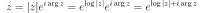

3.2. Complex Numbers¶
We start by defining  by its principal value, then everything else
follows from this definition. We could have also used any other branch, but
then most results in this chapter would need to be updated with the new
convention.
by its principal value, then everything else
follows from this definition. We could have also used any other branch, but
then most results in this chapter would need to be updated with the new
convention.
Then we define exponential, logarithm, power and so on using simple natural
formulas. From these definitions, everything else follows using a very simple
algebra manipulation, all the “messy” features are hidden in the definition and
properties of the real  function. In the derivation of each formula,
only formulas introduced before (above) are used.
function. In the derivation of each formula,
only formulas introduced before (above) are used.
Every formula in this chapter holds for all complex numbers, unless explicitly specified otherwise.
3.2.1. Real and Imaginary Part¶
A complex number  can be written using its real and imaginary parts:
can be written using its real and imaginary parts:
The absolute value  is defined as:
is defined as:
3.2.2. Argument Function¶
Principal value of is defined as
Thus we have . All operations with are then
derived using the properties of the real function.
3.2.3. Exponential¶
Exponential is defined using:
It follows:
Any complex number can be written in a polar form as follows:
The following formula holds:
and also:
and
and
3.2.4. Logarithm¶
The logarithm is defined as:
(3.2.4.1)¶
The motivation is from the following formula:

which using our definition becomes:
(3.2.4.2)¶
so a logarithm is an inverse function to an exponential. The formula (3.2.4.2)
would be satisfied even if we add a factor of (where  is an
integer) to the right hand side of (3.2.4.1). However, the convention is to
define logarithm using the equation (3.2.4.1) exactly.
is an
integer) to the right hand side of (3.2.4.1). However, the convention is to
define logarithm using the equation (3.2.4.1) exactly.
We can now derive a few important formulas:
and
(3.2.4.3)¶
and
(3.2.4.4)¶
3.2.5. Power¶
A power of two complex numbers is defined as:
From above we can also write the power in two different ways:
But these two cannot be used as a definition of a power, because both require the knowledge of , which we are trying to define, where or .
It follows:
(3.2.5.1)¶
and
(3.2.5.2)¶
As a special case for one gets:
(3.2.5.3)¶
Similarly:
(3.2.5.4)¶
3.2.6. Examples¶
For integer we get from (3.2.5.2):
Using (3.2.5.2):
Using (3.2.5.4):
and as a special case:
Using (3.2.5.3):
Using (3.2.4.3):
Code:
>>> from math import floor, pi
>>> from cmath import log
>>> log((-1)*(-1))
0j
>>> log(-1)+log(-1)+2*pi*1j*floor((pi-pi-pi)/(2*pi))
0j
Another example:
Code:
>>> from math import exp, pi
>>> 1j**1j
(0.20787957635076193+0j)
>>> exp(-pi/2)
0.20787957635076193
Another example, using (3.2.5.1):
and
and
Another example, following from (3.2.4.1) and (3.2.4.4):
3.2.7. Complex Conjugate¶
The complex conjugate is defined by:
Now we can solve for and :
Any complex function  can be written using and , i.e. or using and , i.e. .
can be written using and , i.e. or using and , i.e. .
Examples¶
![|z| = \sqrt{\Re^2 z + \Im^2 z} = \sqrt{
\left({1\over 2}(z + \bar z)\right)^2 +
\left({i\over 2}(-z + \bar z)\right)^2}
=\sqrt{z\bar z}
|\bar z| = \sqrt{\Re^2 \bar z + \Im^2 \bar z}
= \sqrt{\Re^2 z + \left(-\Im z\right)^2}
=|z|
\arg z = \atan2(\Im z, \Re z)
=\atan2\left({i\over 2}(-z + \bar z), {1\over 2}(z + \bar z)\right)
=\atan2\left(i(-z + \bar z), z + \bar z\right)
\arg \bar z = \atan2(-\Im z, \Re z)
=-\atan2(\Im z, \Re z) + 2\pi
\left\lfloor \atan2(\Im z, \Re z)+\pi \over 2\pi \right\rfloor
=-\arg z + 2\pi \left\lfloor \arg z+\pi \over 2\pi \right\rfloor
\overline{\log z} = \log|z| -i\arg z
= \log|\bar z| +i\arg \bar z -2\pi i
\left\lfloor \arg z+\pi \over 2\pi \right\rfloor
= \log \bar z -2\pi i
\left\lfloor \arg z+\pi \over 2\pi \right\rfloor
\overline{\sqrt z} = \overline{z^\half}
= \overline{e^{\half\log z}}
= \overline{e^{\half(\log|z| + i\arg z)}}
= e^{\half(\log|z| - i\arg z)}
= e^{\half\left(\log|\bar z| + i\arg \bar z
- 2\pi i \left\lfloor \arg z+\pi \over 2\pi \right\rfloor
\right)} =
= \left(\bar z\right)^\half
e^{-\pi i \left\lfloor \arg z+\pi \over 2\pi \right\rfloor}
= (-1)^{\left\lfloor \arg z+\pi \over 2\pi \right\rfloor} \sqrt{\bar z}](../_images/math/8c5c057e68de13421716c93482d3a98564c3f377.svg)
3.2.8. Complex Derivatives¶
The complex derivative is defined by
(3.2.8.1)¶
Let’s calculate the complex derivative in the direction  , i.e.
we use with real
, i.e.
we use with real  and we introduce with , to simplify the notation:
and we introduce with , to simplify the notation:
![{\d f \over \d z}
= \lim_{t\to0} {f(z+t e^{i\theta})-f(z) \over t e^{i\theta}} =
= \lim_{t\to0} {f(x+t\cos\theta, y+t\sin\theta)-f(x, y) \over t}
e^{-i\theta} =
= {\d \over \d t} f(x+t\cos\theta, y+t\sin\theta) e^{-i\theta} =
= \left({\partial f \over \partial x} \cos\theta
+ {\partial f \over \partial y} \sin\theta \right) e^{-i\theta} =
= \left({\partial f \over \partial x}
{e^{i\theta}+e^{-i\theta} \over 2}
+ {\partial f \over \partial y} {e^{i\theta}-e^{-i\theta} \over 2i}
\right) e^{-i\theta} =
= {\partial f \over \partial x}
{1+e^{-2i\theta} \over 2}
+ {\partial f \over \partial y} {1-e^{-2i\theta} \over 2i} =
= \half\left({\partial f \over \partial x}
-i {\partial f \over \partial y}\right)
+ \half\left({\partial f \over \partial x}
+i {\partial f \over \partial y}\right)e^{-2i\theta} =
= {\partial f \over \partial z}
+ {\partial f \over \partial \bar z} e^{-2i\theta}](../_images/math/3bd95371f7fd762012cf966e0561e6fd597ab24f.svg)
In the last step we have expressed the derivatives with respect to  ,
,  in
terms of derivatives with respect to , , using the relations:
in
terms of derivatives with respect to , , using the relations:
(3.2.8.2)¶
(3.2.8.3)¶
Let’s repeat the important result:
(3.2.8.4)¶
The equation (3.2.8.4) states that the complex derivative along the
direction of any function can be calculated, but the result in general
depends on . The derivatives for all possible angles lie on a
circle, with the center and the radius
.
When the derivative has different values
for different , i.e. when , it
means that the complex limit (3.2.8.1) does not exist. On the
other hand, if the derivative does not depend on , i.e.
when , then the complex limit
(3.2.8.1) exists, and the function has a complex derivative —
such functions are called analytic. Analytic functions thus do not depend on
and we can write just for those.
The and are called Wirtinger derivatives.
We can see that the function is analytic (i.e. has a complex derivative) if and only if:
We can write :
both the real and imaginary parts must be equal to zero:
These are called the Cauchy-Riemann equations.
We can derive the chain rule:
(3.2.8.5)¶![{\d f(g) \over \d z}
= {\partial f(g) \over \partial z}
+ {\partial f(g) \over \partial \bar z} e^{-2i\theta} =
= \left({\partial f \over \partial g}{\partial g \over \partial z}
+ {\partial f \over \partial \bar g}{\partial \bar g \over \partial
z}\right)
+ \left({\partial f \over \partial g}{\partial g \over \partial \bar z}
+ {\partial f \over \partial \bar g}{\partial \bar g \over \partial
\bar z}\right)
e^{-2i\theta} =
= {\partial f \over \partial g}
\left({\partial g \over \partial z}+{\partial g \over \partial \bar z}
e^{-2i\theta} \right)
+
{\partial f \over \partial \bar g}
\left({\partial \bar g \over \partial z}+{\partial \bar g \over \partial \bar z}
e^{-2i\theta} \right) =
= {\partial f \over \partial g} {\d g \over \d z}
+
{\partial f \over \partial \bar g} {\d \bar g \over \d z}](../_images/math/18a349a38bcbdcd05e90ac23f179aa5c3be42265.svg)
Another useful formula is the derivative of a conjugate function:
(3.2.8.6)¶
Using (3.2.8.6), the chain rule (3.2.8.5) can also be written as:
(3.2.8.7)¶
Which has the advantage that only the derivative is needed,
the rest is just conjugation and multiplication. If is analytic, then
, the second term vanishes and the chain
rule is analogous to real functions.
Examples¶
![{\d z \over \d z}
= {\partial z \over \partial z}
+ {\partial z \over \partial \bar z} e^{-2i\theta}
= 1
{\d \bar z \over \d z}
= {\partial \bar z \over \partial z}
+ {\partial \bar z \over \partial \bar z} e^{-2i\theta}
= e^{-2i\theta}
{\d \Re z \over \d z} = {\d {1\over 2}(z + \bar z) \over \d z}
= {\partial {1\over 2}(z + \bar z) \over \partial z}
+ {\partial {1\over 2}(z + \bar z) \over \partial \bar z} e^{-2i\theta}
= \half + \half e^{-2i\theta}
{\d \Im z \over \d z} = {\d {i\over 2}(-z + \bar z) \over \d z}
= {\partial {i\over 2}(-z + \bar z) \over \partial z}
+ {\partial {i\over 2}(-z + \bar z) \over \partial \bar z}
e^{-2i\theta}
= -{i\over2} + {i\over2} e^{-2i\theta}
{\d |z| \over \d z}
= {\d \sqrt{z\bar z} \over \d z}
= {\partial \sqrt{z\bar z} \over \partial z}
+ {\partial \sqrt{z\bar z} \over \partial \bar z} e^{-2i\theta}
= {\bar z + z e^{-2i\theta}\over 2\sqrt{z\bar z}}
= {\bar z + z e^{-2i\theta}\over 2|z|}
{\d |f(z)| \over \d z}
= {\partial |f| \over \partial f} {\d f \over \d z}
+ {\partial |f| \over \partial \bar f} {\d \bar f \over \d z}
= {\bar f{\d f\over\d z} + f{\d \bar f\over\d z}\over 2|f|}
{\d \arg z \over \d z}
={\d\, \atan2\left(i(-z + \bar z), z + \bar z\right) \over \d z}
={\partial\, \atan2\left(i(-z + \bar z), z + \bar z\right) \over
\partial z}
+{\partial\, \atan2\left(i(-z + \bar z), z + \bar z\right) \over
\partial \bar z} e^{-2i\theta} =
= {(z+\bar z)(-i)- i(-z+\bar z)\over 4z\bar z}
+ {(z+\bar z)i- i(-z+\bar z)\over 4z\bar z}e^{-2i\theta} =
= {i\over2}\left( -{1\over z} + {1\over \bar z} e^{-2i\theta} \right)
= {i\over2}\left( -\bar z + z e^{-2i\theta} \over | z|^2 \right)
{\d \log|z| \over \d z}
= {1\over|z|} {\bar z + z e^{-2i\theta}\over 2|z|}
= {\bar z + z e^{-2i\theta}\over 2|z|^2}
{\d \log z \over \d z}
= {\d (\log|z| +i\arg z) \over \d z}
= {\bar z + z e^{-2i\theta}\over 2|z|^2}
+i {i\over2}\left( -\bar z + z e^{-2i\theta} \over | z|^2 \right)
= {\bar z \over | z|^2} = {\bar z\over z\bar z} = {1\over z}
{\d \overline{\log z} \over \d z}
= {\partial \overline{\log z} \over \partial z}
+ {\partial \overline{\log z} \over \partial \bar z} e^{-2i\theta}
= \overline{\partial \log z \over \partial \bar z}
+ \overline{\partial \log z \over \partial z} e^{-2i\theta}
= {1\over\bar z} e^{-2i\theta}
{\d |\log z| \over \d z}
= {\overline{\log z}{\d \log z\over\d z}
+ \log z{\d \overline{\log z}\over\d z}\over 2|\log z|}
= {{1\over z}\overline{\log z}
+ {1\over\bar z}(\log z) e^{-2i\theta}\over 2|\log z|}
= {\bar z\overline{\log z}
+ z (\log z) e^{-2i\theta}\over 2z\bar z|\log z|}](../_images/math/7e7fd311576c64283650d2d24703587df11f345e.svg)
Note that if is real, i.e. , we recover the real derivative
results by setting , i.e. taking the derivative along the -axis:
![{\d x \over \d x} = 1
{\d \Re x \over \d x} = \half + \half = 1
{\d \Im x \over \d x} = -{i\over2} + {i\over2} = 0
{\d |x| \over \d x} = {x + x \over 2|x|} = {x \over |x|}
{\d |f(x)| \over \d x}
= {f{\d f\over\d x} + f{\d f\over\d z}\over 2|f|}
= {f{\d f\over\d x} \over |f|}
{\d \arg x \over \d x} = {i\over2}\left( -{1\over x} + {1\over x}\right) = 0
{\d \log|x| \over \d x}
= {x + x \over 2|x|^2}
= {x \over | x|^2}
{\d \log x \over \d x} = {1\over x}
{\d |\log x| \over \d x}
= {x\log x + x \log x\over 2x^2|\log x|}
= {\log x\over x|\log x|}](../_images/math/dc2b802b7e1f96b336d66ace501a460e1c8c0727.svg)
The above approach to first express things in terms of and and
then differentiate is probably the easiest, but we can do things in any order
we want. For example the derivative of can also be calculated in this
(arguably more complicated) way:
3.2.9. Testing Identities Using Computer Code¶
All the complex identities in this chapter can be tested using the following
codes. test_complex.py:
def arg(x):
"""
The argument function.
"""
from cmath import log
return log(x).imag
def generate_values():
"""
Create values to test the function at.
"""
from math import sin, cos, pi
from random import random
# Generate 3 circles in complex plane, with diameters 0.5, 1 and 2. We
# avoid special values like -1, +/- i, etc., because they typically send
# the numerical values close to the branch cut, and numerical errors then
# flip the sign, e.g.:
# In [1]: sqrt((-0.5j)**2)
# Out[1]: -0.5j
#
# In [2]: (-0.5j)**2
# Out[2]: (-0.25-0j)
#
# In [3]: sqrt(-0.25)
# Out[3]: 0.5j
# Here [3] is the correct value and [1] is incorrect, but that happens due
# to the round off errors in [2] (the small negative imaginary part makes
# sqrt() return -0.5j instead of +0.5j).
#
# For this reason, we chose N=7.
N = 7
circle = []
for n in range(N): circle.append(cos(2*pi*n/N)+1j*sin(2*pi*n/N))
values = []
for n in range(N): values.append(0.5*circle[n])
for n in range(N): values.append(1.0*circle[n])
for n in range(N): values.append(2.0*circle[n])
# Add some random points:
for n in range(30):
values.append((random()-0.5)*20 + 1j*(random()-0.5)*20)
return values
values = generate_values()
def feq(a, b, max_relative_error=1e-12, max_absolute_error=1e-12):
"""
Returns True if a==b to the given relative and absolute errors, otherwise
False.
"""
# if the numbers are close enough (absolutely), then they are equal
if abs(a-b) < max_absolute_error:
return True
# if not, they can still be equal if their relative error is small
if abs(b) > abs(a):
relative_error = abs(a-b)/abs(b)
else:
relative_error = abs(a-b)/abs(a)
#print abs(a-b), relative_error
return relative_error <= max_relative_error
def test_zero1(lhs, rhs):
"""
Tests that a complex function f(x) of one complex variable is zero.
"""
for x in values:
r = feq(lhs(x), rhs(x))
if not r:
print "x lhs(x) rhs(x)"
print x, lhs(x), rhs(x)
assert False
def test_zero2(lhs, rhs):
"""
Tests that a complex function f(x, y) of two complex variables is zero.
"""
for x in values:
for y in values:
r = feq(lhs(x, y), rhs(x, y))
if not r:
print "x y lhs(x, y) rhs(x, y)"
print x, y, lhs(x, y), rhs(x, y)
assert False
def test_zero3(lhs, rhs):
"""
Tests that a complex function f(x, y, z) of three complex variables is zero.
"""
for x in values:
for y in values:
for z in values:
r = feq(lhs(x, y, z), rhs(x, y, z))
if not r:
print "x y z lhs(x, y, z) rhs(x, y, z)"
print x, y, z, lhs(x, y, z), rhs(x, y, z)
assert False
from math import floor, pi
from cmath import sqrt, exp, log
I = 1j
# Test the various identities
test_zero1(lambda x: sqrt(x**2), lambda x: (-1)**floor((pi-2*arg(x))/(2*pi))*x)
test_zero1(lambda x: sqrt(exp(x)), lambda x: (-1)**floor((pi-x.imag)/(2*pi))*exp(x/2))
test_zero1(lambda x: log(exp(x)), lambda x: x+2*pi*I*floor((pi-x.imag)/(2*pi)))
test_zero1(lambda x: log(abs(exp(x))), lambda x: x.real)
test_zero1(lambda z: z, lambda z: abs(z)*exp(I*arg(z)))
test_zero1(lambda z: arg(exp(z)), lambda z: z.imag + 2*pi*floor((pi-z.imag)/(2*pi)))
test_zero1(lambda z: sqrt(z).conjugate(), lambda z: (-1)**floor((arg(z)+pi)/(2*pi))*sqrt(z.conjugate()))
test_zero1(lambda z: arg(z.conjugate()), lambda z: -arg(z) + 2*pi*floor((arg(z)+pi)/(2*pi)))
test_zero2(lambda a,b: exp(a)**b, lambda a,b: exp(a*b)*exp(2*pi*I*b*floor((pi-a.imag)/(2*pi))))
test_zero2(lambda x,a: log(x**a), lambda x,a: a*log(x)+2*pi*I*floor((pi-(a*log(x)).imag)/(2*pi)))
test_zero2(lambda a,b: log(a*b), lambda a,b: log(a)+log(b)+2*pi*I*floor((pi-arg(a)-arg(b))/(2*pi)))
test_zero2(lambda a,b: arg(a*b), lambda a,b: arg(a)+arg(b)+2*pi*floor((pi-arg(a)-arg(b))/(2*pi)))
test_zero2(lambda x,y: sqrt(x*y), lambda x,y: sqrt(x)*sqrt(y)*(-1)**floor((pi-arg(x)-arg(y))/(2*pi)))
test_zero3(lambda x,a,b: (x**a)**b, lambda x,a,b: x**(a*b)*exp(2*pi*I*b*floor((pi-(a*log(x)).imag)/(2*pi))))
test_zero3(lambda x,y,a: (x*y)**a, lambda x,y,a: (x**a)*(y**a)*exp(2*pi*I*a*floor((pi-arg(x)-arg(y))/(2*pi))))
def arg(x):
"""
The argument function.
"""
from cmath import log
return log(x).imag
def generate_values():
"""
Create values to test the function at.
"""
from math import sin, cos, pi
from random import random
# Generate 3 circles in complex plane, with diameters 0.5, 1 and 2. We
# avoid special values like -1, +/- i, etc., because they typically send
# the numerical values close to the branch cut, and numerical errors then
# flip the sign, e.g.:
# In [1]: sqrt((-0.5j)**2)
# Out[1]: -0.5j
#
# In [2]: (-0.5j)**2
# Out[2]: (-0.25-0j)
#
# In [3]: sqrt(-0.25)
# Out[3]: 0.5j
# Here [3] is the correct value and [1] is incorrect, but that happens due
# to the round off errors in [2] (the small negative imaginary part makes
# sqrt() return -0.5j instead of +0.5j).
#
# For this reason, we chose N=7.
N = 7
circle = []
for n in range(N): circle.append(cos(2*pi*n/N)+1j*sin(2*pi*n/N))
values = []
for n in range(N): values.append(0.5*circle[n])
for n in range(N): values.append(1.0*circle[n])
for n in range(N): values.append(2.0*circle[n])
# Add some random points:
for n in range(30):
values.append((random()-0.5)*20 + 1j*(random()-0.5)*20)
return values
values = generate_values()
def feq(a, b, max_relative_error=1e-12, max_absolute_error=1e-12):
"""
Returns True if a==b to the given relative and absolute errors, otherwise
False.
"""
# if the numbers are close enough (absolutely), then they are equal
if abs(a-b) < max_absolute_error:
return True
# if not, they can still be equal if their relative error is small
if abs(b) > abs(a):
relative_error = abs(a-b)/abs(b)
else:
relative_error = abs(a-b)/abs(a)
#print abs(a-b), relative_error
return relative_error <= max_relative_error
def test_zero1(lhs, rhs):
"""
Tests that a complex function f(x) of one complex variable is zero.
"""
for x in values:
r = feq(lhs(x), rhs(x))
if not r:
print "x lhs(x) rhs(x)"
print x, lhs(x), rhs(x)
assert False
def test_zero2(lhs, rhs):
"""
Tests that a complex function f(x, y) of two complex variables is zero.
"""
for x in values:
for y in values:
r = feq(lhs(x, y), rhs(x, y))
if not r:
print "x y lhs(x, y) rhs(x, y)"
print x, y, lhs(x, y), rhs(x, y)
assert False
def test_zero3(lhs, rhs):
"""
Tests that a complex function f(x, y, z) of three complex variables is zero.
"""
for x in values:
for y in values:
for z in values:
r = feq(lhs(x, y, z), rhs(x, y, z))
if not r:
print "x y z lhs(x, y, z) rhs(x, y, z)"
print x, y, z, lhs(x, y, z), rhs(x, y, z)
assert False
def diff(f, z0, theta, eps=1e-8):
h = eps*exp(I*theta)
return (f(z0+h)-f(z0)) / h
def diff2(dfdz, dfdconjz, z0, theta):
return dfdz(z0) + dfdconjz(z0)*exp(-2*I*theta)
def test_zero(f, dfdz, dfdconjz, z0, theta, eps=1e-8):
assert feq(diff(f, z0, theta, eps), diff2(dfdz, dfdconjz, z0, theta),
max_relative_error=eps*1e2, max_absolute_error=eps*1e2)
from math import floor, pi
from cmath import sqrt, exp, log
I = 1j
angles = [0, pi/7, pi/4, pi/2, 3*pi/4, pi]
for x in values:
for theta in angles:
test_zero(lambda x: abs(x), lambda x: x.conjugate()/(2*abs(x)),
lambda x: x/(2*abs(x)), x, theta)
test_zero(lambda x: log(x), lambda x: 1/x, lambda x: 0, x, theta)
test_zero(lambda x: log(exp(x-x.conjugate())), lambda x: 1,
lambda x: -1, x, theta)
test_zero(lambda x: sqrt(x**2), lambda x: sqrt(x**2)/x, lambda x: 0, x, theta)
test_zero(lambda x: sqrt(x**2), lambda x: x/sqrt(x**2), lambda x: 0, x, theta)